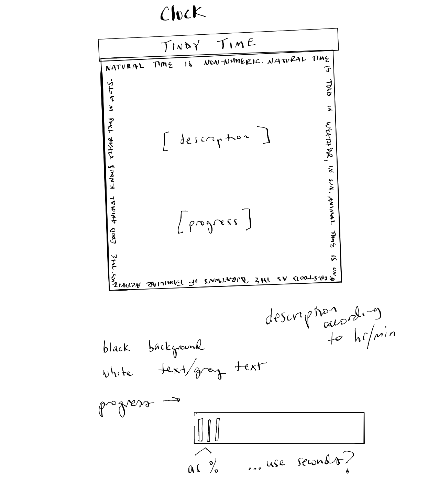
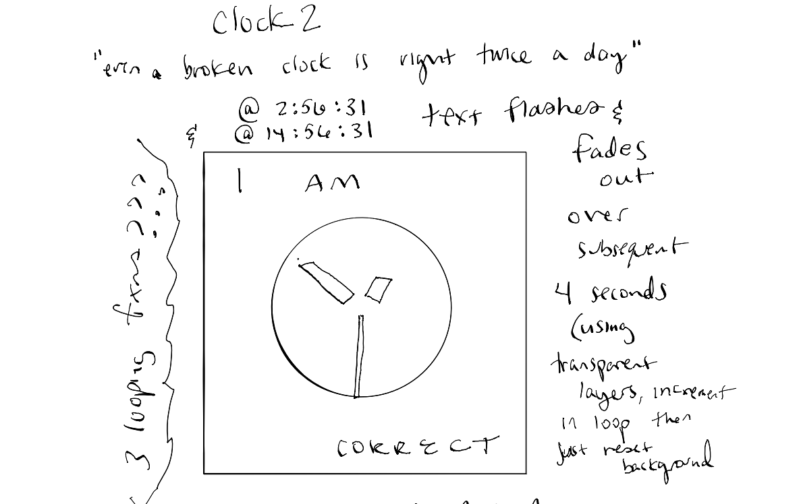
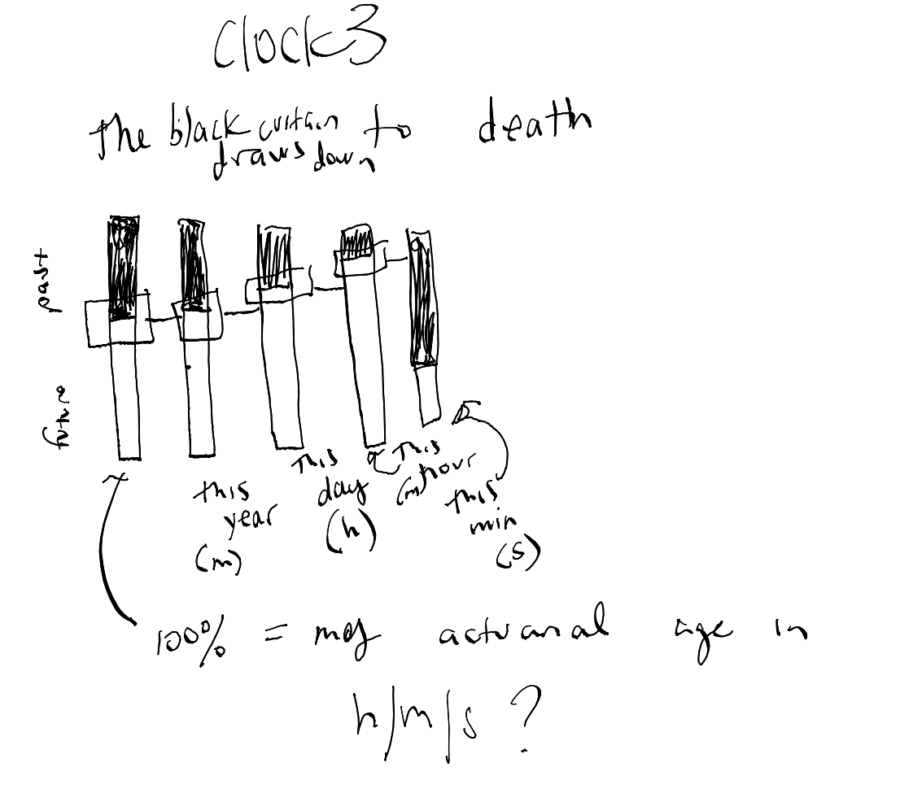

A clock that works on behavioral duration time, according to a day in the life of my cat, Tindy. I added additional features in the final version. It includes reasoning around the edges, the activity my cat would typically be engaged in at the current time, and the "progress" of that action according to its typical duration. Included additional features include smaller text showing the previous and next behaviors in his daily routine, plus a little tiny "actual" time display in the bottom corner, along with the text "but alas..." because... after all, we are stuck in a clock-time world.

I was thinking about the saying that a broken clock is right twice a day. The clock would only ever show the same time, but when it was correct (on 12-hr time), it would declare its correctness, and this would fade out over the next few seonds using a semi-transparent background drawn within the p5 draw() function.

Inspired by the age clock of a previous student, this would be based on my current age in seconds out of my actuarial death age in seconds. Distinct columns would increasingly "zoom" into the current year, the current month, the current day, the current hour, the current minute, to show with each panel in the row an increasingly rapid "filling" of the progress bar at the given scale. This would have utilized moving "windows" centered on the current fill point. The visualization of top-to-bottom filling of the progress bar is intended to highlight the shrinking quantity of time left in my life.
